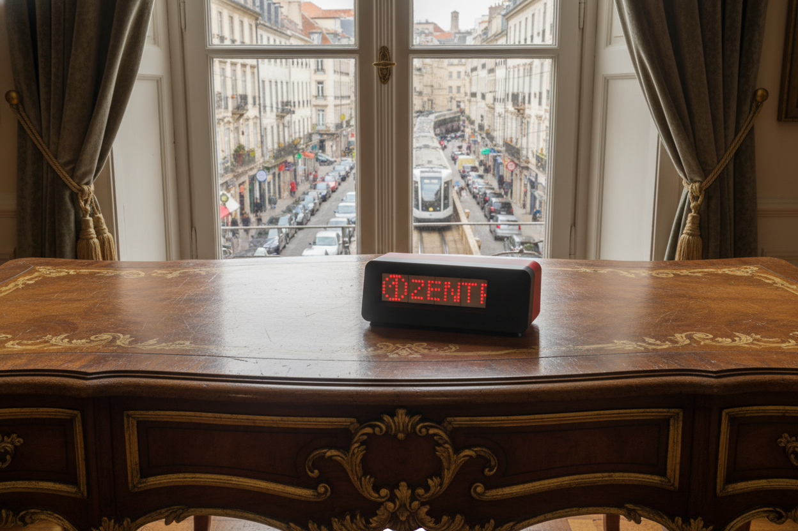
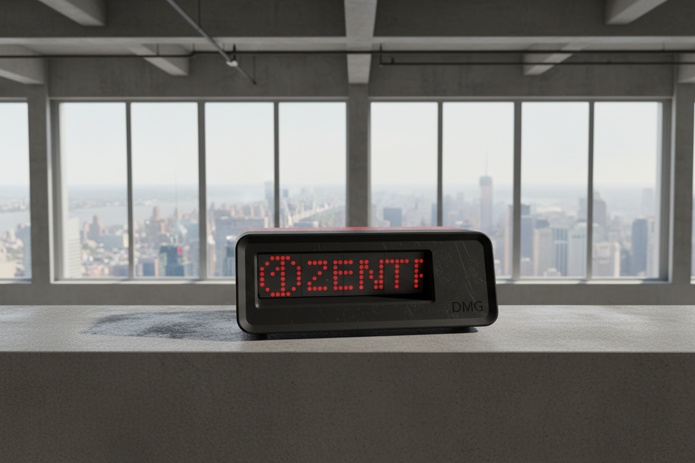
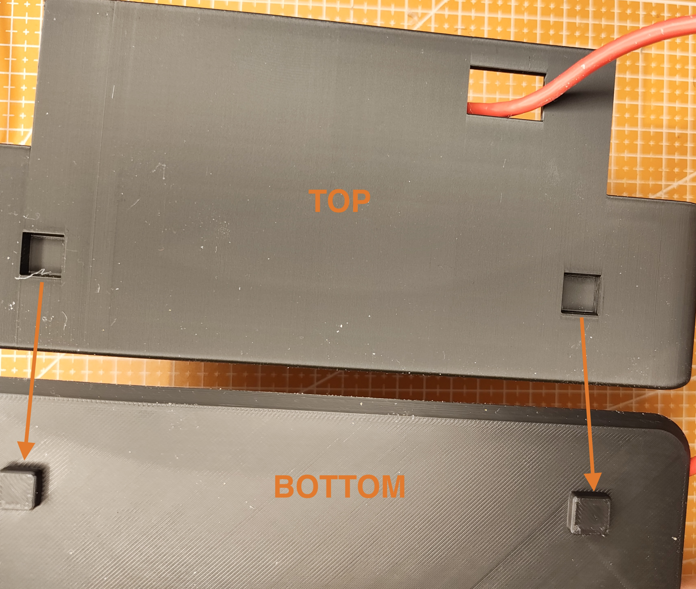
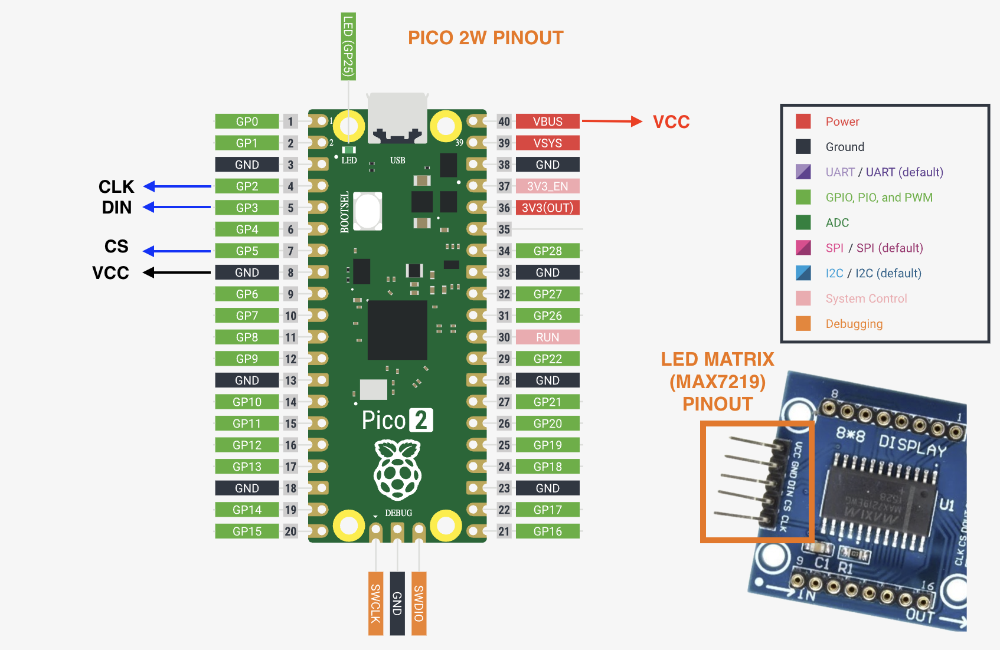
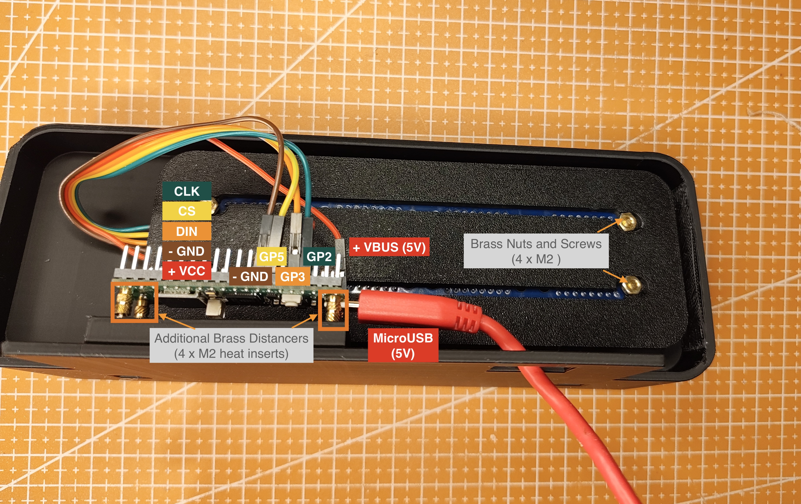
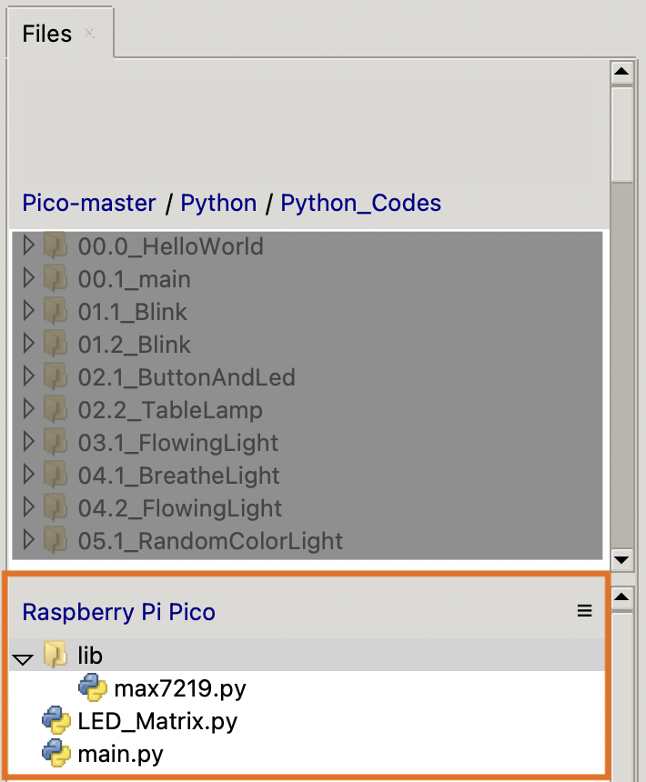
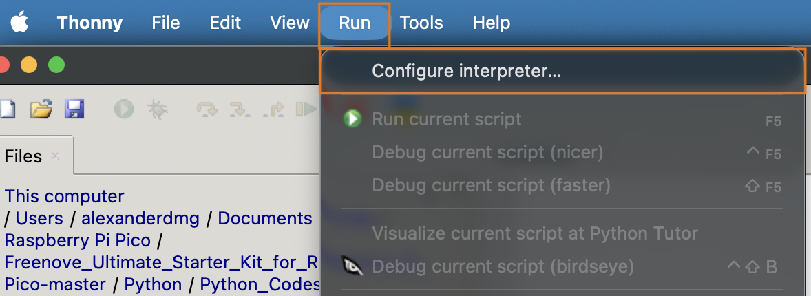
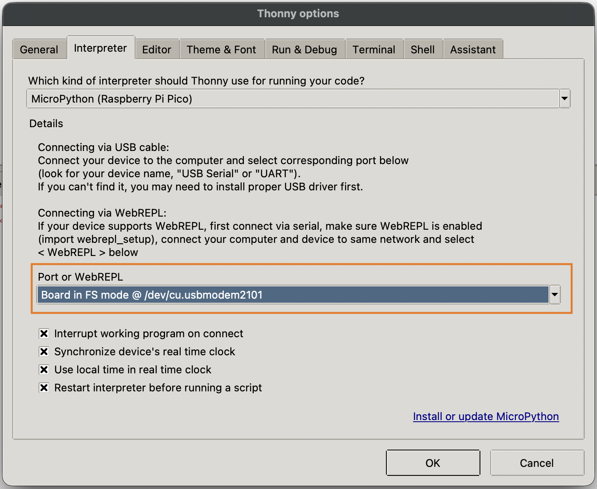

What you're building
The DMG-40 is a compact real-time departure board for the trains and metros you actually take. Four 8×8 LED matrix panels sit behind a smoked acrylic diffuser inside a Braun-inspired FDM enclosure, showing the next two departures for any combination of stops you configure. The Pico W polls the transit API every 30 seconds over Wi-Fi and syncs its clock with NTP so the time is always accurate — even after a power cut.
The enclosure is a single-piece FDM print with a friction-fit back panel, so it opens easily for cable access. The red-on-black color scheme is a nod to the Nuremberg city colors that inspired the original.
This guide covers everything from printing to a working display. The firmware step assumes no prior MicroPython experience — all the scripts you need are in the download package.

The rendered DMG-40 in an urban European setting.

Also looks great in any industrial or Bauhaus-inspired ambience.
What you'll need
All components are widely available. Links point to the suppliers I used — feel free to source equivalents. Total cost is roughly 40–50 € depending on shipping and where you buy the filament.
| Component | Spec / Notes | Qty | Link |
|---|---|---|---|
Microcontroller RPi Pico 2W |
The Wi-Fi (W) variant is required. If you want to avoid soldering, choose "with Header". | × 1 | berrybase.de ↗ |
LED Matrix Module MAX7219 |
8×8 dot matrix, daisy-chainable, 5 V | × 4 | Amazon.de ↗ |
| Jumper wires | Female–female, 10 cm — for matrix to Pico connections | × 8 | BerryBase ↗ |
Filament PLA or PETG |
Color of your choice — PETG is more UV-resistant, but also more difficult to print (needs drying). | ~200 g | |
Screws and Nuts M2×6 mm screws |
For mounting the Pico inside the enclosure and the LED matrix on the holding plate. | × 8 | Amazon.de ↗ |
Heat Inserts M2 heat inserts |
For mounting the Raspberry Pi inside the enclosure. M2 thread, Outer Diameter: ~3 - 3.5 mm. Opt.: 4 heat inserts as distancers b/w Pico and the bottom plate. Alternatively, use 3D-printed or brass distancers. | × 8 | Amazon.de ↗ |
| USB-C cable | For power — any decent 5 V / 1 A cable | × 1 | YOU LIKELY HAVE ONE |
Optional USB-C Breakout |
If you want to use a USB-C connector instead of the Micro-USB on the Pico | × 1 | BerryBase ↗ |
Step by step
Work through these in order. Steps 1–3 are hardware, steps 4–6 are firmware, and steps 7–10 bring it all together. Allow the filament to cure before stressing the enclosure clips.
Open dmg40_enclosure_v2.stl from the Google Drive link in your slicer. I printed the back enclosure with the back side down. The front enclosure was printed with the right side down. However, I'd recommend to try orienting it in such a way to fit best with your printer and turn on supports where needed. The bottom and support parts are easy to print. I used regular Elegoo PLA Black for the front and inner parts and Elegoo Red PLA+ for the back enclosure, using standard settings on my BambuLab P1S. Recommended settings:
Layer height: 0.2 mm
Infill: 10 - 15 % (gyroid or honeycomb)
Walls: 2 perimeters
Bed temp: 55 °C (PLA)
Nozzle temp: 210 - 230 °C (PLA; check your filament specs)
Print time is around 2.5 hours total on a BambuLab P1S at 0.2 mm.
It might make sense to sand down the edges and wherever you had supports for a smoother finish, although for me this printed pretty good out of the box.
First, fire up your soldering iron (~200°C for PLA) and drive the heat inserts into the 4 designated holes on the bottom plate of the front print. Make sure to hold the soldering iron steady and orthogonally to the surface. It makes sense to use a small spatula or pliers with your free hand to easily remove the solder iron from the heat inserts after insertion. Avoid staying too long on each insert to prevent the plastic from melting too much.
Next, screw the Pico W onto the proud surface on the bottom plate, right where you just put the heat inserts.
Insert the four small nuts carefully into the opening between LED module and PCB backplate right where the mounting holes are. Position the module in front of the holding plate and screw the LEDs to the holding plate. Pliers can be very useful to hold the nuts in place while screwing
Push the holding plate with the attached LED matrix from behind into the respective opening of the enclosure. The four diamond shaped pins go into the matching holes in the enclosure. The fit is designed to be snug. If it doesn't fit immediately, sand down the diamond pins a bit and try again. Apply even and steady force while inserting. Make sure that the LED-matrix PIN heads are oriented to the right (looking from the front).

How to mount the bottom plate. (Glue is optional)

Mounted and assembled back holding plate.
If you bought individual 8×8 modules, you have to daisy-chain them. You can follow a tutorial like this Youtube ↗>. If you have the 4-in-1 pre-chained board, skip this — it ships ready to wire.
Please make sure that the holes align with the mounting points on the DN40 enclosure and the back fastening plate. The device was designed to have a flex-fit and provide some tolerance for different 4 x 8 x 8 LED modules.
DIN connector faces right when the display is oriented horizontally. If your departure text scrolls backwards, rotate the module 180° and update ROTATE = True in config.json.
Connect the MAX7219 chain to the Pico W using the wiring diagram in wiring_diagram.pdf. The key connections are:
Matrix DIN → Pico GP3 (SPI0 MOSI)
Matrix CLK → Pico GP2 (SPI0 SCK)
Matrix CS → Pico GP5 (chip select)
Matrix VCC → Pico 5V
Matrix GND → Pico GND
Use female–female Dupont wires to avoid any soldering. Route the wires along the inside wall of the enclosure before closing — there are two cable-guide clips printed inside the shell.

Pico 2W and MAX7219 Pinout.

Pico 2W mounted and wired.
Download the latest stable version of the MicroPython distribution for the Pico 2W from here: micropython.org ↗ Hold the BOOTSEL button on the Pico W while connecting it via USB to your laptop. It mounts as a mass storage device. Drag the downloaded .uf2 micropython firmware file onto the drive — the Pico restarts and the drive disappears. That's it; MicroPython is now flashed onto the Pico.
Next, use Thonny IDE (free, cross-platform) to open and upload main.py, LED_Matrix.py, max7219.py (keep the file with the /lib folder structure) and config.json to the Pico's root filesystem (Github ↗). In Thonny (see below): Run → Select Interpreter → MicroPython (Raspberry Pi Pico).

The Thonny file system (bottom).

Select "Run" -> "Configure interpreter..."

Configure Thonny to connect to the Pico: "Board in FS mode [...]"
Open config.json in any text editor. The key fields to fill in:
{
"wifi": {
"ssid": "YOUR-WIFI-NAME",
"password": "YOUR-WIFI-PASSWORD"
},
"settings": {
"vag_network": "vgn",
"hid": "701",
"brightness": 6,
"clock_duration_seconds": 30
"timezone_offset": 7200
},
"lines": [
{"num": 1, "id": 510, "code": "RE1", "scroll": 9},
{"num": 40, "id": 510, "code": "RE40", "scroll": 13},
{"num": 30, "id": 510, "code": "RB30", "scroll": 13}
]
}
The current script supports the VGN (Nuremberg) transit API. To find your stop IDs: search your stop on VAG API, or on the "Swagger UI".
There are two parts in config.json to configure desired departures. One for the metro ("settings") and one for the trains ("lines").
Metro: hid defines the start station (701 = Maximiliansstraße) for which to show any real-time metro departures in any direction. clock_duration_seconds defines how long the time shall be shown when in the "Clock" section.
num defines the train number, the id defines the start station (501 = Nuremberg Hbf), code is the handle for the train line and scroll is the number of LED pixels counted from the left at which to start the scrolling band.
Please adjust to your desired transit API provider, where you see fit. If you need support in configuring a different API, feel free to reach out!
The clock syncs automatically on first boot as long as Wi-Fi is configured. Set your timezone offset in config.json:
"timezone_offset": 7200 // CEST (UTC+2) during summertime; change to 3600 for CET (UTC+1) during wintertime
The Pico W has no onboard RTC battery, so it re-syncs with NTP each time it powers on. Adjust the timezone_offset in the config.json by calculating 3600*UTC+1 (e.g., for UTC+8: 8*3600 = 28800).The order of display is as follows: flash all LEDs briefly on boot, show the DMG running animation, metro departures, train departures, current time and restart. If the display is stuck on boot, it means Wi-Fi hasn't connected yet — check your credentials and that the SSID is 2.4 GHz (the Pico W doesn't support 5 GHz).
If the time to the next departures is orders of magnitude off, you might not have set the correct timezone offset. Feel free to re-adjust. Note: if your timezone changes between summer and winter, you have to re-adjust twice a year.
import json
import network
import requests
import ntptime
import machine
import time
from machine import Pin, SPI, RTC
from time import sleep
import max7219
# --- Load Configuration ---
def load_config():
try:
with open('config.json', 'r') as f:
return json.load(f)
except:
return {}
config = load_config()
# --- Hardware Setup ---
spi = SPI(0, sck=Pin(2), mosi=Pin(3))
cs = Pin(5, Pin.OUT)
display = max7219.Matrix8x8(spi, cs, 4)
rtc = RTC()
display.brightness(config['settings'].get('brightness', 1))
request_timeout = 20
# --- Global Config Variables ---
SSID = config['wifi']['ssid']
PASSWORD = config['wifi']['password']
VAG_NET = config['settings']['vag_network']
HID = config['settings']['hid']
def draw_pacman_pixel(x, direction="LEFT", mouth_open=True):
bitmap_open = [0x38, 0x7C, 0xF8, 0xF0, 0xF0, 0xF8, 0x7C, 0x38]
bitmap_closed = [0x38, 0x7C, 0xFE, 0xFE, 0xFE, 0xFE, 0x7C, 0x38]
current_map = bitmap_closed if not mouth_open else bitmap_open
for y, row in enumerate(current_map):
for bit in range(8):
pixel_val = (row >> (7 - bit)) & 1 if direction == "RIGHT" else (row >> bit) & 1
if pixel_val: display.pixel(x + bit, y, 1)
def welcome_animation():
for x in range(32, -12, -1):
display.fill(0)
if x > 4: display.fill_rect(x-6, 3, 2, 2, 1)
draw_pacman_pixel(x, "LEFT", mouth_open=(x % 4 != 0))
display.show(); sleep(0.06)
for x in range(-12, 13, 1):
display.fill(0)
draw_pacman_pixel(x, "RIGHT", mouth_open=(x % 4 != 0))
display.show(); sleep(0.09)
display.fill(0)
display.write_text("DM", 6, 1, min_x=0)
draw_pacman_pixel(18, "RIGHT", mouth_open=True)
display.show()
def init_wifi(ssid, password):
wlan = network.WLAN(network.STA_IF)
wlan.active(True)
if not wlan.isconnected():
wlan.connect(ssid, password)
timeout = 15
while timeout > 0 and not wlan.isconnected():
timeout -= 1
time.sleep(1)
if wlan.isconnected():
try:
ntptime.settime()
l = time.localtime(time.time() + config['settings']['timezone_offset'])
rtc.datetime((l[0], l[1], l[2], l[6], l[3], l[4], l[5], 0))
except: pass
return True
return False
def query_VAG_API(stop_id, line):
url = f'https://start.vag.de/dm/api/abfahrten.json/{VAG_NET}/{stop_id}/{line}'
response = None
try:
# CRITICAL: strict timeout ensures the script never hangs
response = requests.get(url, timeout=request_timeout)
data = response.json()
deps = data.get('Abfahrten', [])
return [d["Richtungstext"] for d in deps], [d["AbfahrtszeitIst"] for d in deps]
except Exception as e:
print(f"Connection error for {line}: {e}")
return [], []
finally:
# CRITICAL: always close the connection to free memory
if response:
response.close()
def get_mins(t_str):
try:
target = time.mktime((
int(t_str[0:4]), int(t_str[5:7]), int(t_str[8:10]),
int(t_str[11:13]), int(t_str[14:16]), int(t_str[17:19]), 0, 0
))
return int((target - time.time()) / 60)
except: return 0
# --- Initial Execution ---
welcome_animation()
wifi_status = init_wifi(SSID, PASSWORD)
while True:
# 1. Regional Lines
for line_cfg in config['lines']:
dirs, tms = query_VAG_API(line_cfg['id'], line_cfg['code'])
if tms:
mins = get_mins(tms[0])
display.scroll_text_split_rect(
line_cfg['num'], dirs[0],
delay_ms=45, scroll_start=line_cfg['scroll']
)
display.fill(0)
box_w = 12 if line_cfg['num'] > 9 else 8
display.vline(0, 0, 8, 1); display.hline(1, 0, box_w-2, 1)
display.vline(box_w-2, 0, 8, 1); display.hline(1, 7, box_w-2, 1)
for j, char in enumerate(str(line_cfg['num'])):
display.draw_digit(int(char), j*5+1, 1)
txt = "NOW" if mins <= 0 else str(mins)
lx = display.write_text(txt, line_cfg['scroll'], 1)
if mins > 0: display.write_text("M", lx + 1, 1)
display.show(); sleep(4)
# 2. Clock Phase
for _ in range(config['settings'].get('clock_duration_seconds', 30)):
t = rtc.datetime()
display.draw_clock(t[4], t[5], show_colon=(t[6] % 2 == 0))
display.show(); sleep(1.0)
# 3. Metro Phase
m_dirs, m_tms = query_VAG_API(HID, "U1")
if m_tms:
mins = get_mins(m_tms[0])
display.scroll_text_split(m_dirs[0], delay_ms=45)
display.fill(0); display.draw_8x8_circle(0); display.draw_one(2, 1)
txt = "NOW" if mins <= 0 else str(mins)
lx = display.write_text(txt, 9, 1)
if mins > 0: display.write_text("MIN", lx, 1, 1, -1)
display.show(); sleep(4)
Route the USB-C cable through the back- panel slot before closing the enclosure. The slot is sized for a standard USB-cable. Make sure that it is a data and power USB cable to be able to adjust the code and firmware without opening the enclosure at any time.
Tuck the Dupont wires into the two cable-guide clips on the inside of the enclosure. Give each wire a gentle tug to confirm nothing is loose before sealing up. You are now set to plug the device in.

The final product.
Align the back panel's tabs with the slots in the main body. Press gently in. The friction-fit doesn't need force, just even pressure. If one corner won't seat, check for a wire caught in the gap.
Enjoy your new DMG-40!
Plug into any USB-C 5 V power source. The display should show a brief boot animation, while it connects to Wi-Fi. Within 10–15 seconds you should see your first departure entry.
If nothing lights up: confirm the matrix VCC is on the Pico's VBUS pin (not 3V3) — the modules need 5 V. If the clock shows but no departures appear, check your stop_ids and API provider in config.json.
img/dmg40_firstboot.jpg
Live departures on first successful boot.